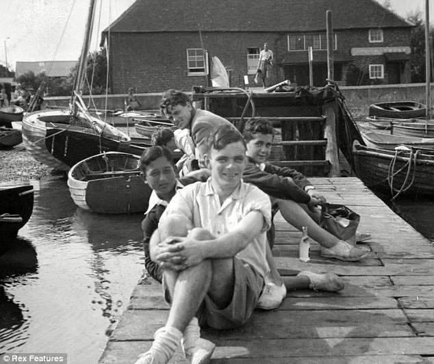
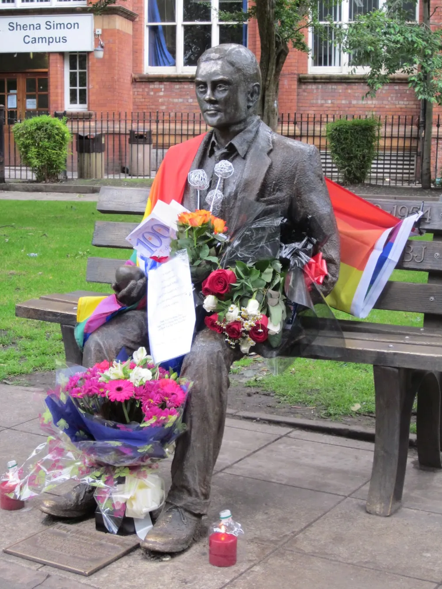

AlanTuring

Real Name |
Alan Mathison Turing |
|---|---|
birth |
June 23, 1912 |
|
United Kingdom of Great Britain and Ireland, London, Westminster, Maida Vale |
|
death |
June 7, 1954 (he was 41 years old) |
Whimslow, Cheshire, England |
|
Nationality |
United Kingdom |
Occupation |
a computer scientist |
-
Overview

AlanTuring, carved on £50 in England
English mathematician and computer scientist. He graduated from King's College at Cambridge University and taught at the same university. He is considered the father of computer science and the founder of modern computer science. When World War II broke out, he took charge of the Nazi German Enigma code-breaking at the request of the government to contribute to the victory of the Allied Powers, shortening the duration of the World War and saving approximately 14 million people.
After the end of the war, he returned to the private sector, but in 1952, he was arrested on charges of homosexuality, which was treated illegally in Britain at the time, and was found dead at his home two years later in 1954. The cause of death was cyanide poisoning, and it was presumed to be suicide, but the bereaved family and some historians insisted on the accident.
Since then, as LGBTQ human rights have surfaced and misconceptions have begun to change, talk of amnesty for Turing began to emerge. On December 24, 2013, Queen Elizabeth II was granted special pardons by the authority of the monarch at the request of the Minister of Justice, and was completely reinstated when the acquittal was declared unconstitutional in a legal provision that entwined him under the pretext of his sexual orientation. It was 59 years after his death.
-
In life
2-1. Childhood
When he was a child, he boasted a clear brain by learning to read in three weeks and solving calculus-deepening problems on his own without learning calculus from someone. At the age of 16, his school math teacher told Turing's mother,
"There's nothing more to teach, so study on your own."

15-year-old Alan
At the age of 16, he met his first love, a friend named Christopher Morcom, and was greatly influenced. Morcom was also a gifted student who had been said to have entered Cambridge University as a scholarship student if she had not died early, and they both liked to solve difficult math problems together. However, when Morcombe died of mycobacterium bacteremia in 1930, he devised a computational theory while thinking about how to store the intelligence that's in Morcombe's brain or deliver it to others.
2-2. youth
Turing passed the first entrance examination at Cambridge University, a prestigious university in England. However, because he couldn't get a scholarship, Turing retake the examination and enter as a scholarship student. While attending King's College at Cambridge University, he has already published a groundbreaking paper called On Computable Numbers, with an Application to the Entscheidung problem (1936). This is famous for presenting the theoretical basis for Turing machine theory and Neumann computers.
The Turing machine is a concept about the feasibility of computers and was first used in the study of the possibility of proving propositions. Like Russell's paradox and incompleteness theorem, Turing proved the proposition 'I cannot be proved by finite number of logical processes'. In the middle, Turing proves that if there is a long strip of paper divided into compartments and the ability to set the result of reading and replacing data on it, it is the same as mathematical proof and human intelligence.
Turing went to the United States to study after completing his master's degree in mathematics at Cambridge University, where he earned his doctorate in mathematics at Princeton University. At this time, he became acquainted with Turing Chochurch and John von Neumann of mathematical logic, both of whom were professors at Princeton. Neumann, who was 9 years older than Turing, interacted with him and noticed his talent, and while he was also aware of Turing's sexual orientation, he remained close. Neumann advised Turing to stay in the United States rather than return to England, where homosexuality is classified as a crime, when Turing's doctoral degree was completed. Neumann offered Turing his teaching position, but Turing, a young man who was full of patriotism at the time, refused it and chose to return to England with his devotion to his country.
2-3. During World War II
After returning home, Turing joined the British decryption agency GC&CS in 1939 and was in charge of Session Hut 8 to decrypt the Nazi German army. During his transfer as the director, he developed Turing Bombe, and it was at this point that he decrypted the infamous Enigma. Of course, he traveled from GC&CS to the United States, where he developed a relationship with Claude Shannon.
1939 Turing at Bortham, England
2-4. After World War II
After the end of the war, Turing participated in the development of the Manchester Mark 1, an early digital computer at the University of Manchester, and published a paper on the structure of a program-embedded computer, the first von Neumann computer in the UK.
In 1950, he published a paper on artificial intelligence called "Computing Machinery and Intelligence Computing Machinery and Intelligence". It is famous for devising artificial intelligence even before the word artificial intelligence was coined and predicting its widespread use. In the paper, Allen proposes an artificial intelligence experiment called the Turing test. The paper, which was contributed to the renowned philosophical journal Mind, combined with the concept of the Turing machine, became the beginning of the 'functionalism' trend in modern psychological philosophy. As an objection to this, the argument of the 'Chinese Room' presented by American philosopher John Seol in 1980 is famous.
2-5
Unlike Turing's accomplishments and extraordinary abilities, his later years were not good. Having returned to his academic career after a war, Turing met and dated a man named Arnold Murray by chance. Then one day, it turns out that Allen's house was stolen and that Arnold was involved in the incident. Feeling betrayed significantly, Turing called the police and told fellow scientists that he was gay, just as he went around telling them that he was gay, Turing also told the police about his relationship with Arnold. However, homosexuality was illegal in England at the time in 1952, and Turing was charged with obscenity.
Because it was a job, Turing was treated with no discrimination by his colleagues who valued ability and humanity rather than his sexual orientation. Regardless of Turing's achievements and usual behavior, under the British anti-gay law at the time, Alan Turing was clearly branded a social disturbing criminal and was treated as an unscrupulous villain by the public and the judiciary. The McCarthyism craze that was prevalent in Western capitalist countries at the time even led to a sad false accusation that he might be a spy on the Soviet side.
Turing enjoyed playing chess, and the conspiracy theory was convinced when Turing's chess partner was identified as a major Soviet spy. As a result, the British intelligence department monitored his daily routine because of his background as a first-class computer scientist, and this tragedy overlapped and Turing's social status fell to the abyss. Eventually, a court ruled against homosexuality and required him to choose either imprisonment or chemical castration by female hormone administration. Turing, a scholar to the bone, refused imprisonment and chose castration to continue his research.
However, things changed when Turing was convicted. At the time, homosexuality was considered a security risk, so Turing was excluded from all confidential duties and even restricted from leaving the country.
Eventually, Turing decided to commit suicide at the young age of 41 in 1954. There was no will. There is a myth that Turing died after taking a bite of an apple injected with cyanide, which is difficult to be true. There was a half-cracked apple at the actual death site, but sharing it half-cracked was Allen's usual habit, and there is no clear evidence that cyanide was injected into the apple.
Then, in the 2000s, along with the movement to promote LGBTQ human rights, a petition for an apology to Turing began, and Britain's unfair punishment in the past came to the surface again. In 2009, when the Labor Party came to power, Prime Minister Gordon Brown formally apologized for the unfair treatment Turing received. The UK Post Office included Alan Turing among the '10 Great Britons' to be placed on the stamp to be issued in February 2012. Although he was a criminal under written law, he changed his perception of LGBTQ people and regained his honor in half a century by putting more weight on his great achievements.
On the other hand, there was also a campaign to make 2012 the year of Turing, the 100th anniversary of its birth. However, the British House of Representatives properly poured cold water on this move, and the national apology and pardon resolution for Alan Turing proposed to the British House of Representatives on February 6 was rejected. David Cameron, the Conservative-centered cabinet, interpreted that he was refusing a pardon for Turing out of fear that it would be seen as acceptance of homosexuality.
On 23 December 2013, Turing was officially reinstated by the Queen's special pardon after a Turing reinstatement petition was filed by Stephen Hawking and tens of thousands of other literate people. It was 59 years after his death
A view of the "Turing Memorial" located at the University of Manchester, where Turing served. It is decorated with a Pride flag.
A portrait of Turing has been confirmed to be used for the new £50 sterling new note, which will be issued from June 2021, and GCHQ is holding an event to celebrate it.
AlanTuring, carved on £50 in England